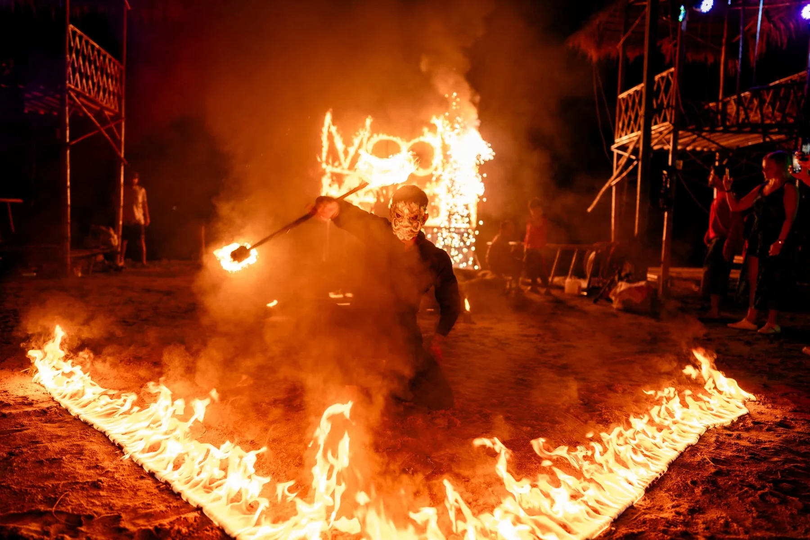
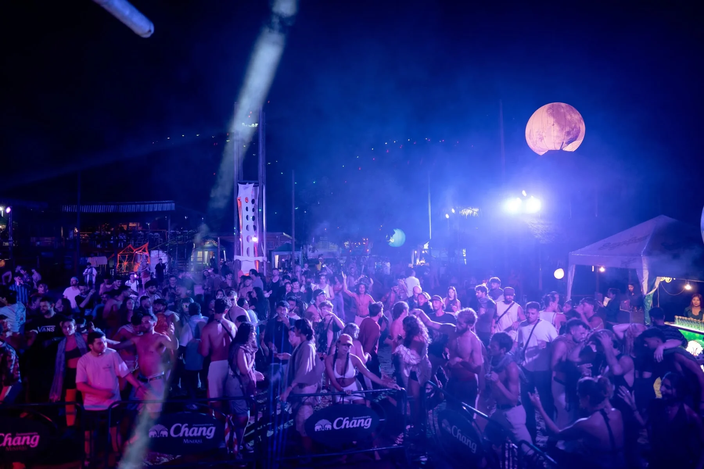
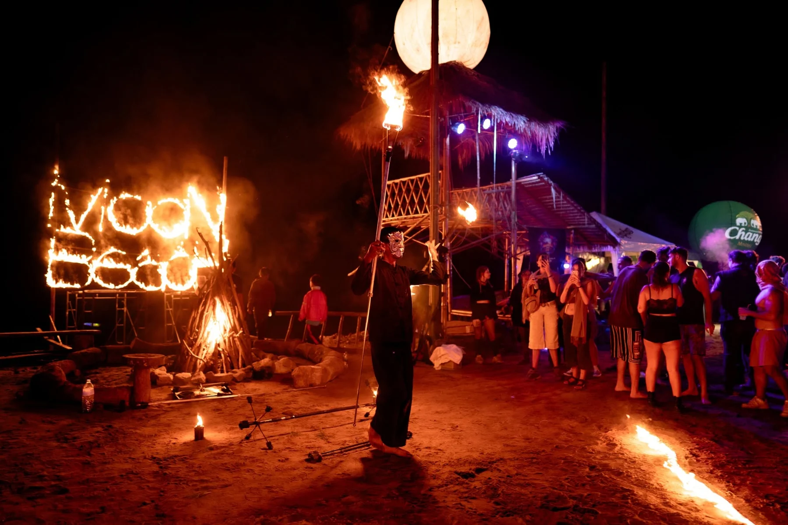

MOON BEACH FESTIVAL PAI / PHOTO + FILM
UNDER THE MOON.
LOST IN THE MUSIC.
One moon. A thousand memories. Pai, Thailand.
THE MORNING AFTER, SORTED.
FIND YOUR
EVENT PHOTOS.
Pick your event. Find your face.
ONE COMMUNITY. EVERY KIND OF GOOD TIME.
FEEL THE FIRE.
FOLLOW THE MOON.

THE PEOPLE. THE ENERGY. THE NIGHT.
MOONLIT
MEMORIES.
PRESS
PLAY.
Some moments need sound.

THE FULL ALBUMS
LOOKING FOR
YOUR PHOTOS?
Full event galleries. Every unforgettable face.
FIND YOUR PHOTOS ↗MORE THAN A NIGHT OUT / PAI, THAILAND
COME FOR THE SUNSET.
STAY FOR THE VIBE.
Café, riverside restaurant, music and a little adventure.
Your place to slow down, meet people and make a day of it.

BY THE PAI RIVER. UNDER THE MOON.10:00 AM – 9:00 PM
Closed every Tuesday · Local time in Pai฿400–600 per person
Dining price range · Festival tickets announced separately095 526 9365 ↗Riverside vibes, food, drinks and good company.
Take to the river and catch the sunset.
A soundtrack for golden hour and beyond.
Ping-pong · Pool table · Volleyball · Pai River swimming
Taxis are available from Pai Walking Street.